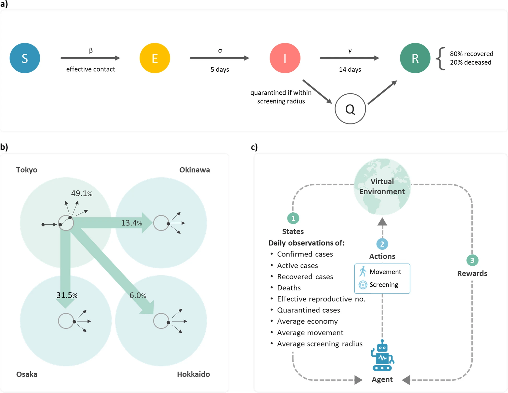

In the wake of the COVID-19 pandemic, balancing public health measures with economic stability became a global challenge. A recent study by Kao et al., 2024 demonstrated the power of Reinforcement Learning (RL) in finding this balance. Researchers developed an RL algorithm to dynamically manage disease control and economic activity in four key Japanese regions: Tokyo, Osaka, Okinawa, and Hokkaido.
How Does RL Work in Epidemic Management?
At the core of this study is the SEIQR model (Susceptible-Exposed-Infected-Quarantined-Removed), enhanced by RL. RL is a machine learning method where an agent learns to make decisions by interacting with its environment. The agent receives rewards or penalties for its actions and learns to optimize decisions over time. Learn more about RL.
The model allows the agent to take daily actions—like controlling movement or applying screening—based on ongoing observations. Over time, it finds strategies that reduce infection peaks and economic impact.
Results of the Study
The RL agent consistently outperformed static approaches, reducing infections and shortening epidemic waves. For example, in low-mortality areas like Okinawa, the model favored lenient movement restrictions—highlighting its ability to adapt policies to regional dynamics.
Expanding the Approach
This success story points to RL’s potential in other complex domains. At QSC, we see similar applications in managing wildlife disease, livestock, or even balancing vaccination and culling strategies in conservation.
By modeling real-world dynamics, RL can help decision-makers test scenarios and select optimal interventions across fields from ecology to manufacturing.
Future of AI for Complex Systems
RL’s adaptability makes it an ideal candidate for dynamic, multifaceted environments. At QSC, we’re applying it not only in epidemic modeling, but also to optimize manufacturing workflows and design resilient ecological interventions.
Reference
Kao, Y., Chu, PJ., Chou, PC. et al. (2024). A dynamic approach to support outbreak management using reinforcement learning and semi-connected SEIQR models. BMC Public Health 24, 751.